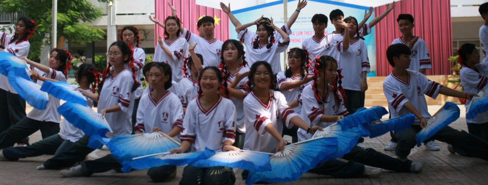
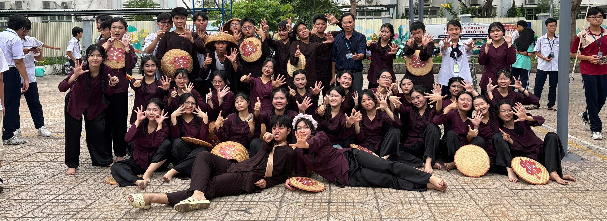
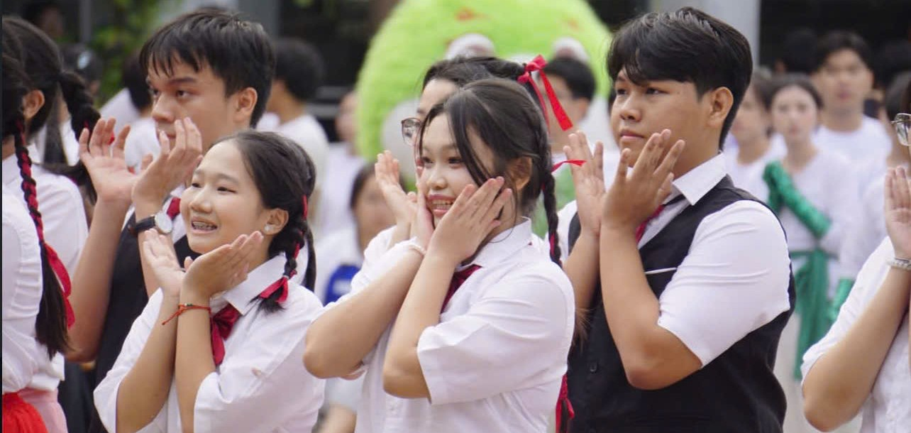
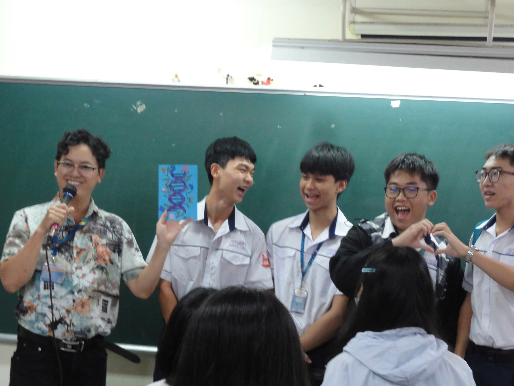
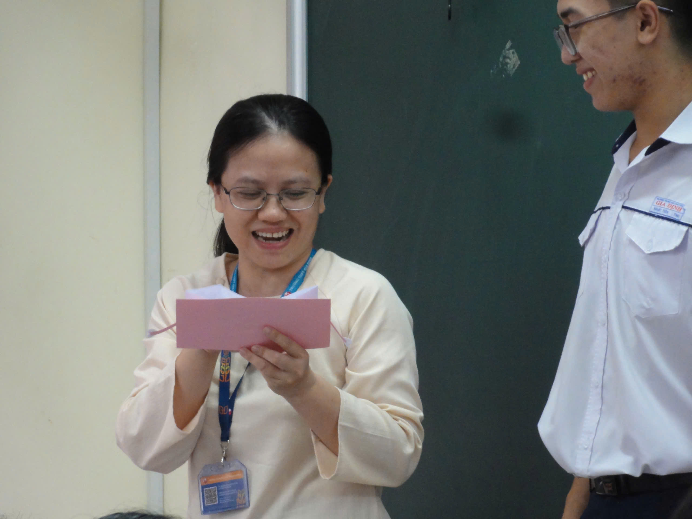
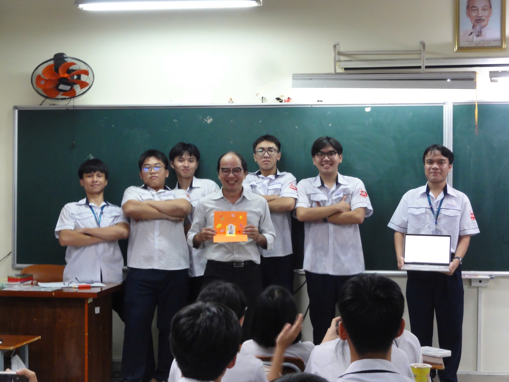
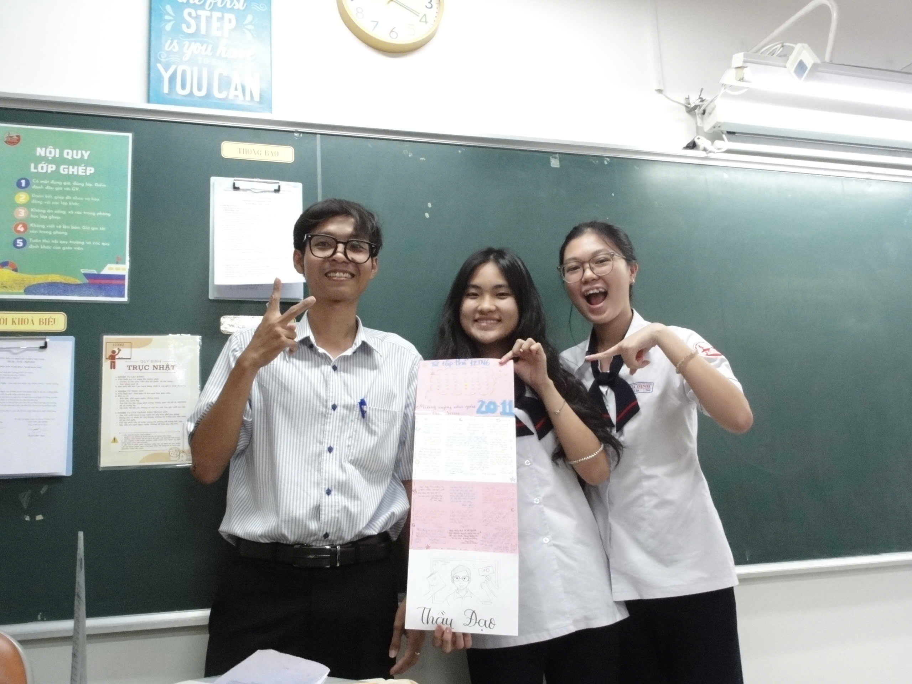
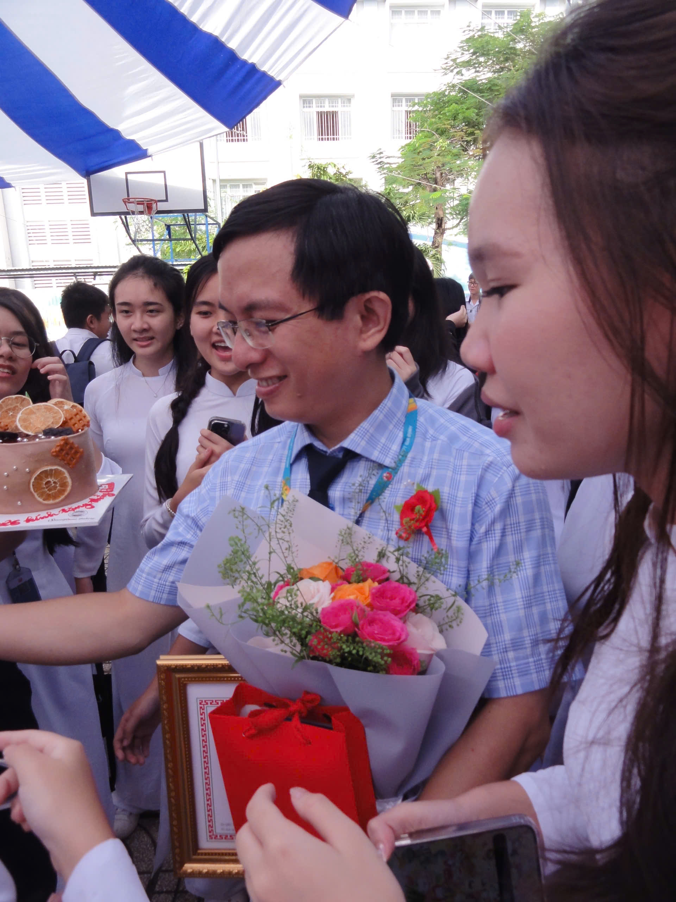
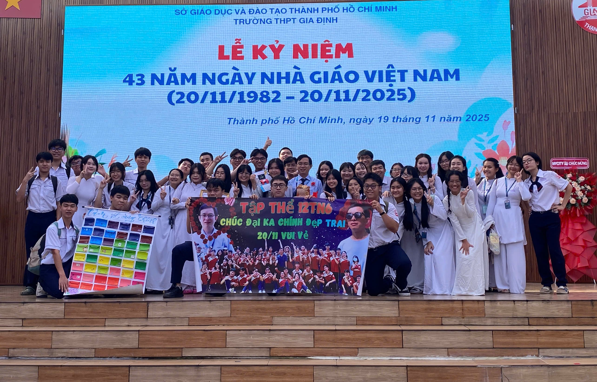

TÍ NỊ 6 QUA TỪNG ĐỢT FLASHMOB
Khởi đầu: Âm vang rực rỡ của tuổi trẻ nhiệt huyết
Thuở ban đầu tuy ngại ngùng mà tràn đầy sức sống, ta đã cùng nhau "cháy" hết mình dưới cái nắng của sân trường. Giai điệu tình yêu sôi động, ngọt ngào vẽ nên khúc thánh ca tươi đẹp về tuổi trẻ, hòa cùng tấm lòng nhiệt huyết của hàng nghìn con người cùng luôn chung một nhịp điệu.Chúng ta đã chọn bài “Yêu” làm chủ đề chính cho màn Flashmob năm ấy, một ca khúc của nhóm 7UPPERCUTS. Không phải là một bản tình ca thông thường để chiêm nghiệm trong tĩnh lặng, mà là một lời tuyên ngôn đầy bản năng và rực rỡ của tuổi trẻ. Sâu xa hơn, nó tôn vinh sự tự do trong cảm xúc. Giữa một thế giới người lớn đầy toan tính và sợ hãi sự từ chối, "Yêu" cổ xúy cho thái độ "yêu là cháy hết mình", bất chấp sự ngây ngô hay đôi khi là sự "điên khùng" của bản thân khi rơi vào lưới tình.

Flashmob - 10TN6
Đoạn giữa: Khi gắn kết hòa cùng nỗ lực
Khi những bước nhảy đã vào form cũng là lúc chúng ta bắt đầu thấu hiểu hơn về nhau. Từng động tác chuyển đội hình, từng giọt mồ hôi rơi trên sân trường lúc đó chính là minh chứng cho tình cảm chân thành, đoàn kết, không khoảng cách giữa chúng ta.
Chọn chủ đề Đám cưới miền Tây cho màn trình diễn năm 11, bài hát “Tết gòi cưới luông” đã khuấy đảo không khí sân trường, tạo nên bức tranh đầy sôi động. Với giai điệu bắt tai, lời ca hóm hỉnh và những điệu nhảy tưng bừng, tiết mục là lời nhắn nhủ dễ thương: Tết này không chỉ có bánh chưng, dưa hành mà còn có cả... rước nàng về dinh! Kính mời quý vị cùng hòa mình vào không khí 'hỉ sự' rộn ràng nhất năm nay! Tình yêu nhẹ nhàng, trong sáng của những cô cậu trai trẻ hóa thành niềm hạnh phúc bất tận khi những người có tình lại được ở bên nhau tới tận đầu bạc răng long.

Flashmob - 11TN6
Lời kết: Nốt nhạc cuối rực rỡ đầy luyến tiếc
Đợt Flashmob cuối cùng này mang một cái tên khác: Kỷ niệm. Nhìn xung quanh, vẫn là những gương mặt ấy, nhưng ai cũng hiểu rằng đây là một trong những lần cuối cùng chúng ta được đứng cạnh nhau dưới danh nghĩa học sinh Gia Định. Tiếng nhạc dứt, tiếng vỗ tay vang lên, và sâu thẳm trong lòng mỗi đứa lớp 12 đều có một chút gì đó nghẹn lại.Mở đầu màn trình diễn cuối cùng bằng giai điệu sôi động của “Waka Waka”. Trong những giây phút cháy hết mình cùng nhịp điệu ấy, ta như quên hết bao nỗi lo, muộn phiền về tương lai trước mắt, tựa như chỉ còn sống trọn khoảnh khắc này. Không chỉ là một bài hát, đây là lời hiệu triệu những trái tim dũng cảm: dù bạn có vấp ngã, hãy đứng dậy, phủi sạch bụi trần và tiếp tục tỏa sáng vì thời khắc của bạn đã đến! Ta tiếp tục vươn tới những giai điệu rực rỡ khác, và kết thúc bằng một màn khiêu vũ đầy trang nhã, như là một lời tạm biệt, cuối chào 12 năm học đã qua, để dũng mãnh mà bước tới những ngày tháng tươi đẹp đang đợi ta phía trước.

Flashmob - 12TN6
20/11 của tụi mình
Ngày Nhà giáo Việt Nam 20/11 là dịp để tôn vinh những người lái đò thầm lặng, một nét đẹp văn hóa truyền thống của dân tộc. Để kỷ niệm ngày lễ ý nghĩa này, lớp chúng mình đã cùng nhau tạo nên một bất ngờ nhỏ. Không phải những món quà xa xỉ, cả lớp đã dành trọn những giờ ra chơi để tự tay tỉ mẩn cắt dán, viết nên những tấm thiệp chở đầy lòng biết ơn.
Việc bí mật chuẩn bị và bất ngờ trao tặng những món quà "handmade" ấy không chỉ khiến thầy cô xúc động, mà còn giúp chúng mình xích lại gần nhau hơn. Với chúng mình, 20/11 không chỉ là ngày lễ hiến chương, mà còn là ngày của tình thân và những ký ức tuổi học trò vô giá






